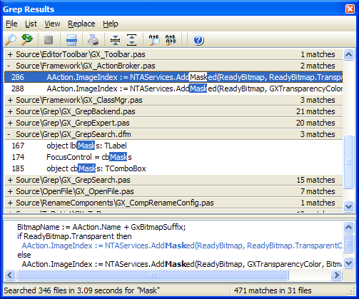

Grep Results |
  
|
Grep Results |
|
The Grep Results window is where the results of a Grep Search are shown. It also provides an interface for multi-file search and replace on matches. The window uses a folding display of matches to allow you to easily locate a particular match. This expert supports IDE docking. An example of this window appears below.

The results window displays all files which contained one or more matches for the search term. Under each file, a list of matches for that particular file can be shown. To expand or contract a file's matches, click on the filename, press enter, or use the '+' and '-' keys. When a specific match line is selected, the window can show any number of lines of match context using the Show Match Context and Set Context Lines menu items. Note that the match context might not be accurate if the file has changed since the search.
The number to the left of each match is the line number where the match was found. The results list highlights the matching characters in each entry to indicate where the match occurred.
To jump to a match in the IDE editor, double click the desired line, press enter, or use the Goto button. You can control whether the result is positioned at the top of the IDE editor or in the middle through an option in under Vies,Options or via the GExperts Configuration dialog in the section for the Grep Results expert.
To start a new search, click the Search button and the Grep Search dialog will appear. As the search progresses, the new search button will be disabled and the abort button will be enabled to cancel the current search. Once a search is completed, the results window displays the number of files searched, the search time, and the total number of matches.
You can expand all items in the list by clicking the expand button in the toolbar. Similarly, clicking the contract button in the tool bar will contract all result items. The entire match list can be coped to the clipboard or saved to a file using the items on the File menu.
Using the Options dialog, define how selected matches are shown in the editor, whether to expand all matches by default, the number of context lines to show, and the list and context fonts/colors.
Search and Replace on Matches
You can do a search and replace operation on all of the matches in the list or only the selected file/match. When you choose one of those options, a dialog appears prompting for the string to use in place of the matched text. The replace operation supports regular expression subexpressions. See the section on Subexpressions for more details. Note that forms that are currently open can not have their text replaced, due to limitations in the IDE. Please close all forms before trying to replace text in them.
Tip: You can drag and drop a file from the results list onto a running program like notepad, or you can drag it onto a program icon or shortcut to execute the program with the selected file. When running the standalone GExpertsGrep.exe program, double clicking a file will open the associated program for that file type.